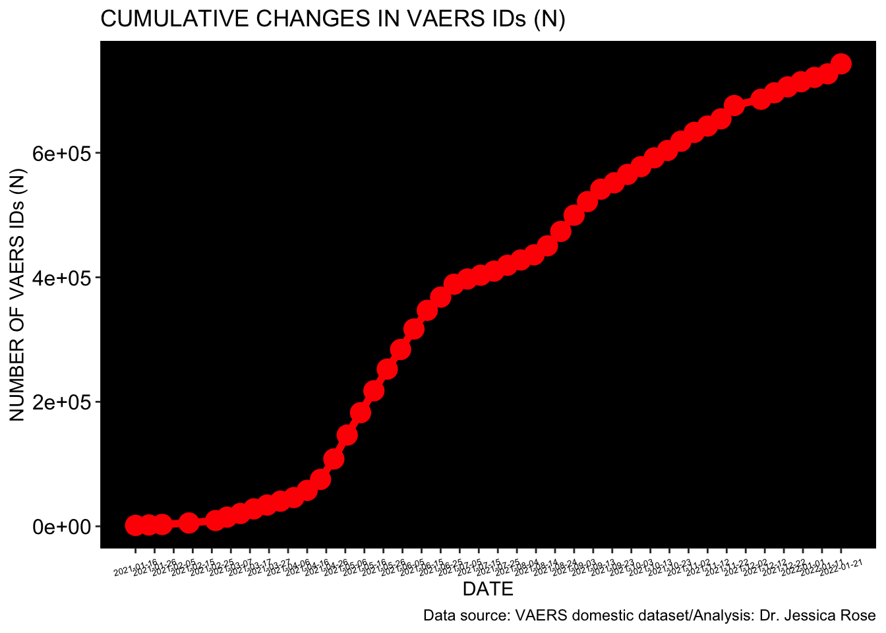
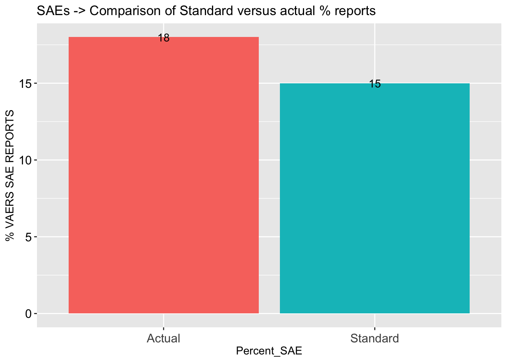
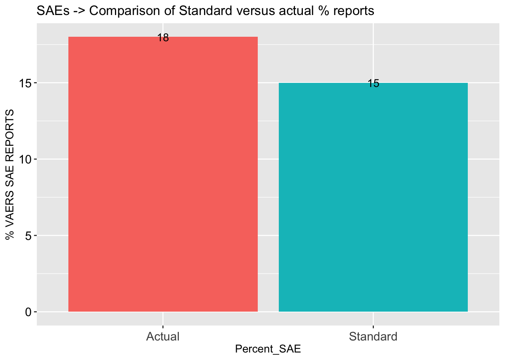

This is an R Markdown sheet generated from the VAERS data. I included some code but for the most part, only figures are shown. I decided to show figures pertaining to Death, Spontaneous abortions, Breakthrough COVID-19 infections and Cardiovascular, Neurological and Immunological adverse events.
I start by coalescing the .csv files downloaded from the VAERS website: https://vaers.hhs.gov/data/datasets.html
## [1] 51068ACTUAL REPORTED SEVERE ADVERSE EVENTS (SAE) COMPARED TO VAERS STANDARD (15%) - IT IS STILL CONSISTENTLY HIGHER AND PEAKED AT 57%
DISTRIBUTION OF ALL DATA BY AGE GROUP - THE MAJORITY OF INDIVIDUALS ARE BETWEEN THE AGES OF 30 AND 70 NUMBER OF SPONTANEOUS ABORTIONS
## [1] 417DISTRIBUTION OF SPONTANEOUS ABORTIONS - THIS SUBSET IS GROWING WEEKLY 
THE PLOTS SHOWING OBSERVED VERSUS EXPECTED TRAJECTORIES SHOW CLUSTERING OF DATA AROUND ‘0’ - A LARGER PROPORTION OF REPORTS ARE MADE WITHIN 24 HOURS THAT ONE WOULD NOT EXPECT TO SEE IF THERE WAS NO CAUSALITY
Plot showing OBSERVED (orange) vs. EXPECTED (yellow) percentages of specific time-frames between Vaccination Date and Miscarriage Date
 HEATMAPS ARE BEAUTIFUL WAYS TO ILLUSTRATE A LOT OF INFORMATION IN A SINGLE FIGURE. THESE HEATMAPS SHOW THE INTERSECTIONS OF INJECTION DATES AND ONSET OF ADVERSE EVENT DATES AS PER SPECIFIC AE GROUP. THE COLOR OF THE INTERSECTION ‘BLOCK’ INDICATES THE NUMBER OF INTERSECTIONS THAT OCCURRED - RED = HIGHEST; BLUE = LOWEST. POINTS LYING ON THE DIAGONAL HAVE A CORRELATION COEFFICIENT WHERE R = 1, INDICATING A 1:1 CORRELATION.
HEATMAPS ARE BEAUTIFUL WAYS TO ILLUSTRATE A LOT OF INFORMATION IN A SINGLE FIGURE. THESE HEATMAPS SHOW THE INTERSECTIONS OF INJECTION DATES AND ONSET OF ADVERSE EVENT DATES AS PER SPECIFIC AE GROUP. THE COLOR OF THE INTERSECTION ‘BLOCK’ INDICATES THE NUMBER OF INTERSECTIONS THAT OCCURRED - RED = HIGHEST; BLUE = LOWEST. POINTS LYING ON THE DIAGONAL HAVE A CORRELATION COEFFICIENT WHERE R = 1, INDICATING A 1:1 CORRELATION.
HEATMAP showing correlation between Vaccine Date and Onset Date for Spontaneous Abortions
 Distribution of all Breakthrough COVID-19 cases by age group
Distribution of all Breakthrough COVID-19 cases by age group
 CUMULATIVE BREAKTHROUGH COVID-19 CASES
CUMULATIVE BREAKTHROUGH COVID-19 CASES

BREAKTHROUGH COVID CASES BY MANUFACTURER
THE QUESTION OF DISTRIBUTION BY MANUFACTURER SHOULD BE ANSWERED IN ORDER TO ASSESS WHETHER OR NOT PFIZER IS ACTUALLY MORE HIGHLY ASSOCIATED WITH BREAKTHROUGH INFECTIONS - THE PRODUCTS ARE EQUALLY DISTRIBUTED THROUGHOUT THE U.S. POPULATION SO IT APPEARS AS THOUGH PFIZER IS MORE HIGHLY ASSOCIATED WITH BREAKTHROUGH INFECTIONS
Pie chart for distribution of vax manu data in US population (U.S. COVID-19 Vaccine Delivered by Vaccine Type
Date generated: CDC | Data as of: May 4, 2021 6:00am ET. Posted: Tuesday, May 25, 2021 6:00 PM ET https://covid.cdc.gov/covid-data-tracker/#vaccinations
BREAKTHROUGH COVID-19 CASES WHO DIED
BUT THANKFULLY, DEATH IS NOT EVENLY DISTRIBUTED BETWEEN MANUFACTURERS
BREAKTHROUGH COVID-19 CASES WHO DIED BY AGE
Plot showing OBSERVED (orange) vs. EXPECTED (yellow) percentages of specific time-frames between Vaccination Date and Death Date
 HEATMAP showing correlation between Vaccine Date and Onset Date for Deaths

Plot showing OBSERVED (orange) vs. EXPECTED (yellow) percentages of specific time-frames between Vaccination Date and Onset Date of Cardiovascular Adverse Event
HEATMAP showing correlation between Vaccine Date and Onset Date for Deaths

Plot showing OBSERVED (orange) vs. EXPECTED (yellow) percentages of specific time-frames between Vaccination Date and Onset Date of Cardiovascular Adverse Event

 HEATMAP showing correlation between Vaccine Date and Onset Date for Cardiovascular Adverse Events
HEATMAP showing correlation between Vaccine Date and Onset Date for Cardiovascular Adverse Events
 Plot showing OBSERVED (orange) vs. EXPECTED (yellow) percentages of specific time-frames between Vaccination Date and Onset Date of Neurological Adverse Event
Plot showing OBSERVED (orange) vs. EXPECTED (yellow) percentages of specific time-frames between Vaccination Date and Onset Date of Neurological Adverse Event

 HEATMAP showing correlation between Vaccine Date and Onset Date for Neurological Adverse Events
HEATMAP showing correlation between Vaccine Date and Onset Date for Neurological Adverse Events
 Plot showing OBSERVED (orange) vs. EXPECTED (yellow) percentages of specific time-frames between Vaccination Date and Onset Date of Immunological Adverse Event
Plot showing OBSERVED (orange) vs. EXPECTED (yellow) percentages of specific time-frames between Vaccination Date and Onset Date of Immunological Adverse Event

 HEATMAP showing correlation between Vaccine Date and Onset Date for Immunological Adverse Events
HEATMAP showing correlation between Vaccine Date and Onset Date for Immunological Adverse Events

Histograms to show distributions by age group in Death, Hospital, ER, CV, Neuro and Immuno AE groups


VAERS ID COUNTS NORMALIZED TO U.S. POPULATION - blue line is best fit to approximate count for 2021
Cumulative AEs by ID (red), ID count per update as per total ID count (blue), and ID count normalized to million fully vaxxed (yellow).

 CUMULATIVE NUMBER OF ADVERSE EVENTS AS PER AE GROUP
CUMULATIVE NUMBER OF ADVERSE EVENTS AS PER AE GROUP
 CUMULATIVE NUMBER OF VAERS IDS AS PER AE GROUP PER MILLION FULLY VAXXED (FV)
CUMULATIVE NUMBER OF VAERS IDS AS PER AE GROUP PER MILLION FULLY VAXXED (FV)
 THE FOLLOWING IS A NEW ADVERSE EVENT GROUP THAT I CREATED BY WRITING A FUNCTION THAT PULLS OUT AES BY KEYWORD. THIS NEW AE GROUP INCLUDED FEMALE REPRODUCTIVE ISSUES THAT OCCURRED IN WOMEN POST-INJECTION.
THE FOLLOWING IS A NEW ADVERSE EVENT GROUP THAT I CREATED BY WRITING A FUNCTION THAT PULLS OUT AES BY KEYWORD. THIS NEW AE GROUP INCLUDED FEMALE REPRODUCTIVE ISSUES THAT OCCURRED IN WOMEN POST-INJECTION.
## [1] 1421